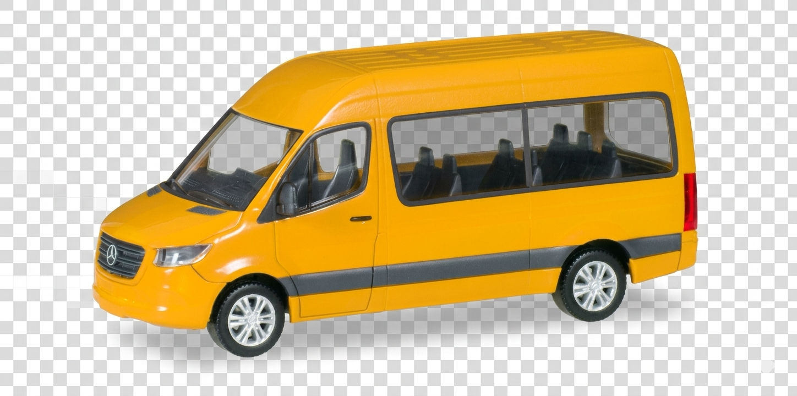

Salidas Buseta Chia / GuaymaralINSTRUCCIONES DE USO: Segun la hora de salida de la buseta debes calcular: donde se encuentra actualmente, teniendo en cuenta que el recorrido dura 25 minutos. Debes tener en cuenta el sentido del recorrido para CALCULAR la ubicacion correcta.
Horarios:
- LUNES A SABADO: 5:30 AM - 8:00 PM
- DOMINGO 7:30 AM - 6:00PM
Solicitudes
0 solicitudes registradas
| # | Fecha | Hora |
|---|